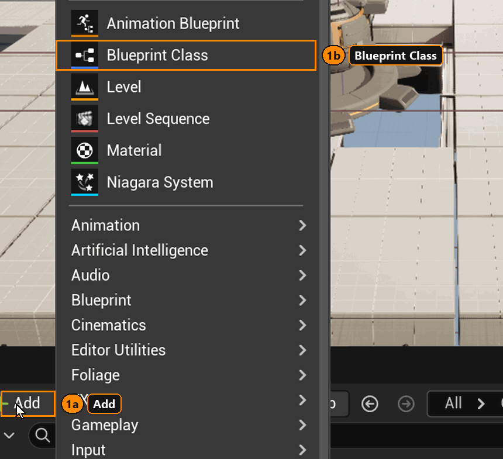
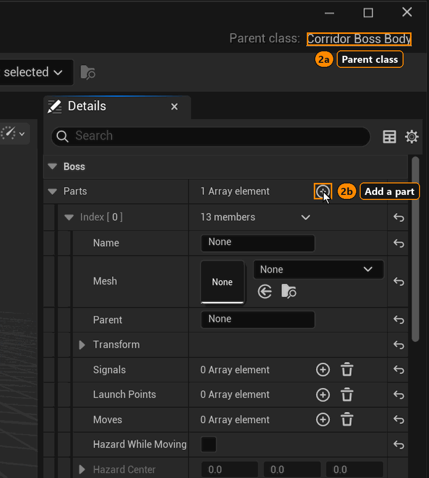
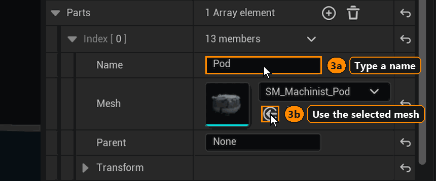
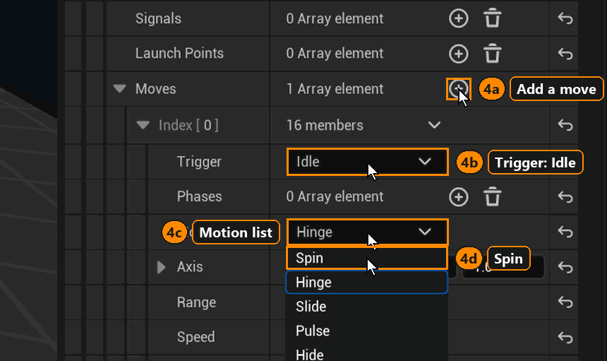
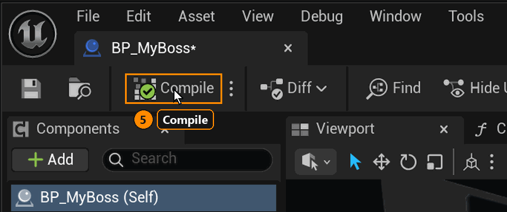
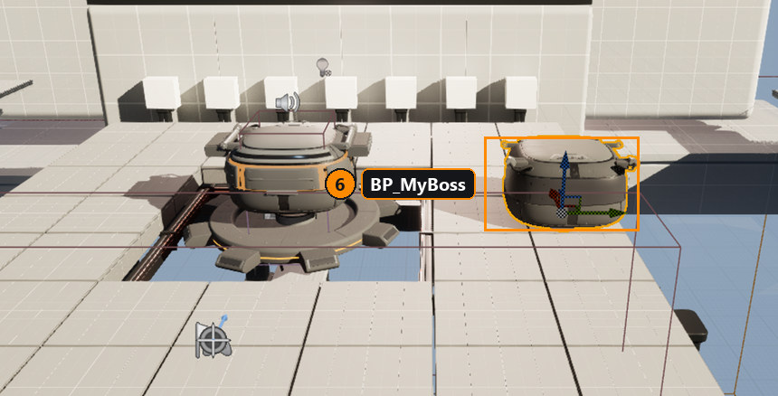
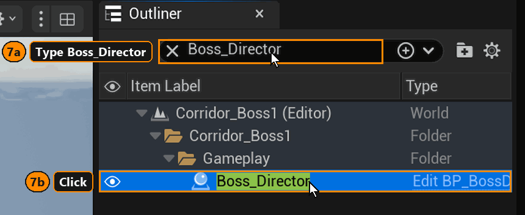
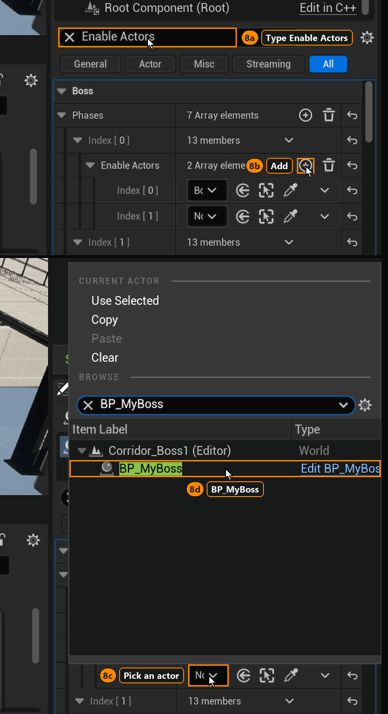
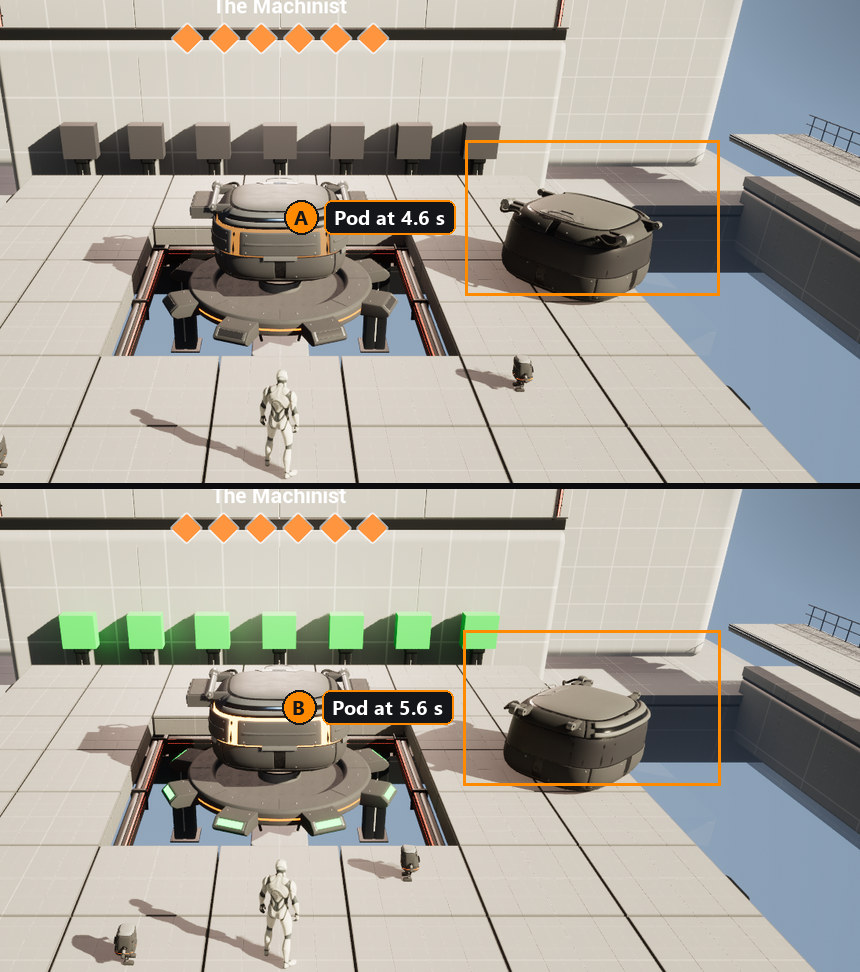

13. Boss bodies
Goal: build the visible half of a boss, its moving parts, as a Blueprint with no code, and let a boss fight drive it.
You need: Unreal Engine 5.3–5.8 with the plugin enabled (pictures: 5.7), Settings > Plugin Content ticked in the Content Browser (5.3–5.5: Show Plugin Content), the demo map Corridor_Boss1 open and a static mesh for each part (here the kit's SM_Machinist_Pod). Stop Play before you edit.
A boss has two halves. The fight logic (the Boss_Director with its phases, the attack loops, the boss target) decides what happens and when the boss is hurt. The body, a Corridor Boss Body, is what you see: static-mesh parts that move, light up and can hurt the hero. It only listens to the fight. The two shipped bodies, BP_Boss_Machinist (11 parts, Corridor_Boss1) and BP_Boss_Engine (20 parts, Corridor_Boss2), are in Plugins > Proving Grounds: 3D Platformer Mechanics > Blueprints > Boss; open one next to yours to copy from.
Part 1: make a body
- In the Content Browser open your own folder (here Content > MyBoss) and click Add > Blueprint Class.

In Pick Parent Class open All Classes, type Corridor Boss Body in the search box, select it and click Select. Name the Blueprint (here BP_MyBoss).
- Double-click BP_MyBoss. The editor's title bar shows Parent class: Corridor Boss Body, and the Details panel starts with the Boss category. Click + next to Parts to add a part.

Each part is one static mesh. Name is what a child part's Parent and the log use, Parent is the name of the part it rides on (empty = the body itself), Transform is relative to that parent, Signals are light-up material slots, Launch Points are points in the part's own space (cm) that a Missile Rain's missiles go up from, Moves say what the part does and Hazard While Moving makes it hurt the hero while it moves.
- Type a Name (here Pod), select your mesh in the Content Browser and click the Use Selected Asset from Content Browser arrow on the Mesh row.

Build the body round its own origin, facing +X, with the feet at Z 0. Collision on the meshes is ignored: the body never blocks the hero.
- Click + next to Moves. Set Trigger to Idle (it plays all fight long) and Motion to Spin. Speed is in degrees per second (default 90), Axis is the turn axis (default Z). With Idle a Spin turns all the time; with any other trigger it turns for Time + Hold Time.

- Trigger, when the move plays: Idle, Phase Begin, Step Started (an attack is about to land: the telegraph), Hit (with Health Index: the hit that brings the boss to that health), Defeat, Retry (after the hero dies) or Track Hero (turns toward the hero).
- Motion, what the part does: Spin, Hinge (turns by Range degrees and back), Slide (moves by Range cm and back), Pulse (grows by Range, 0.04 = 4 %), Hide (flies Range cm along Axis and stays hidden until the parts are restored: a Retry or a new fight) or Signal (only lights a signal slot).
- Delay, Time and Hold Time time the move (Hold Time -1 = hold until the parts are restored). Any move can light a signal slot while it plays (Signal Index, -1 = none, with Signal Color and Signal Intensity). Sfx names a theme sound for it.
- Click Compile, then save.

Part 2: put it in the fight
- Drag BP_MyBoss from the Content Browser into the level where the boss should stand (here 7 m to the side of the Machinist: Location 0, 700, 0). Its parts are built at once, so you see them in the viewport while you edit.

- Select the fight's director: type Boss_Director in the Outliner's search box and click its row.

- The director only drives the actors listed in a phase's Enable Actors. Type Enable Actors in the Details search box, click + next to the first phase's Enable Actors, open the new entry's list, type BP_MyBoss and click it. Do the same in every phase where the body should move (the shipped Boss_Body is listed in all seven).

Leave the body's own Director and Attack Loops empty: it finds the level's director and attack loops itself. Fill them only if the level has more than one director.
Result
Click Play. The fight starts and BP_MyBoss's Pod turns beside the Machinist at its Speed: measured 89.6 degrees per second (Speed 90), here 87 degrees between two frames 0.97 s apart.

The shipped BP_Boss_Machinist shows the other triggers at work: its turntable turns on Phase Begin and Track Hero, its six plates each have a Hit move with Motion Hide and a Health Index from 5 to 0, so one plate flies off per hit.
If it doesn't work - A part does not move: its trigger never fires. A body that is missing from a phase's Enable Actors freezes in that phase; also check the phase and attack names on the move. - Tick Log Hooks on the body and play: the Output Log (category LogCorridor) prints every trigger and the moves it plays. - A child part floats: its Parent must equal the other part's Name exactly. - Missiles do not leave your Launch Points: list the body in the Missile Rain actor's Launchers (category Missiles); its Launch Point Tag must equal the body's Launch Point Tag (both MissileLaunch by default). - A part is in the wrong place after editing the Blueprint: compile again; parts are rebuilt by the construction script.
See also: BOSS_BODY.md · README section 8, Boss framework